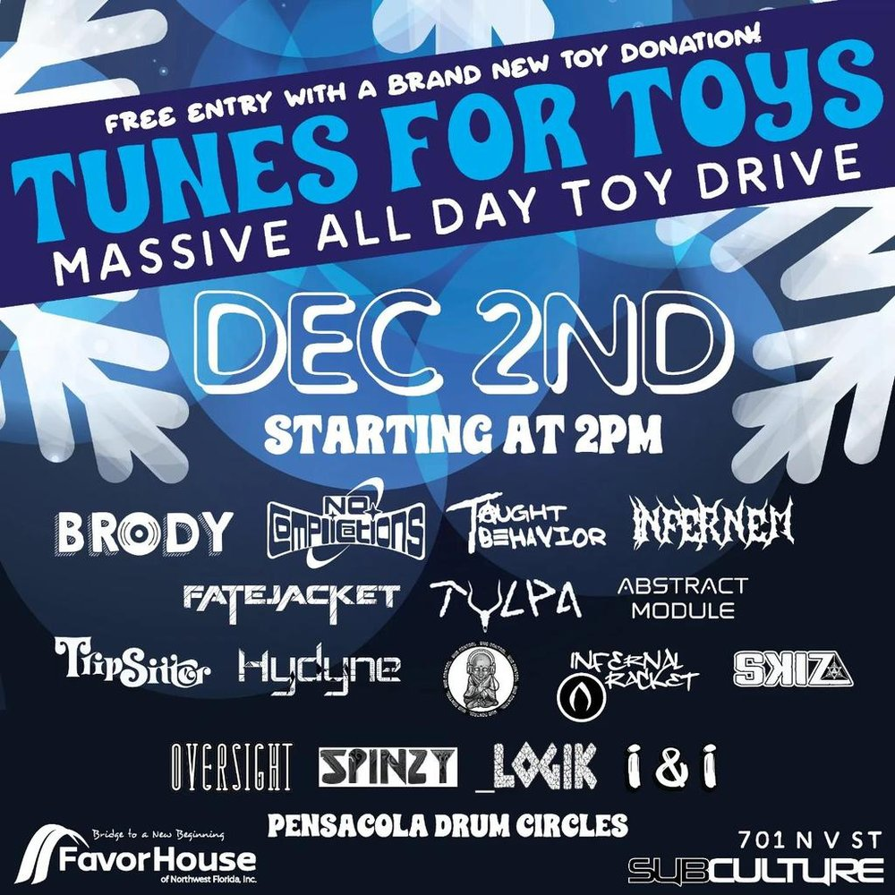

 SAT DEC 2from the archive TUNES FOR TOYS tunes for toys Subculture also that nightflying raccoon suit, goodwin rainer, hopout, operation hennessy @ the handlebar open in mapsshare this flyerthe archive ↗